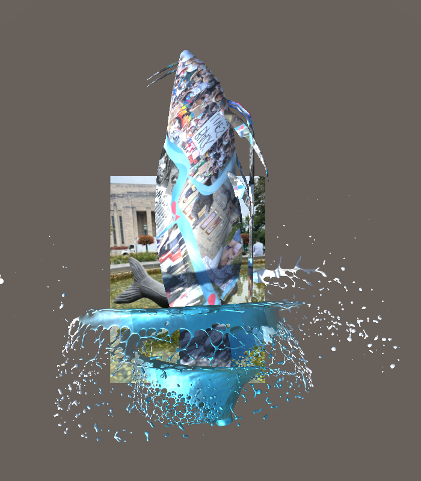
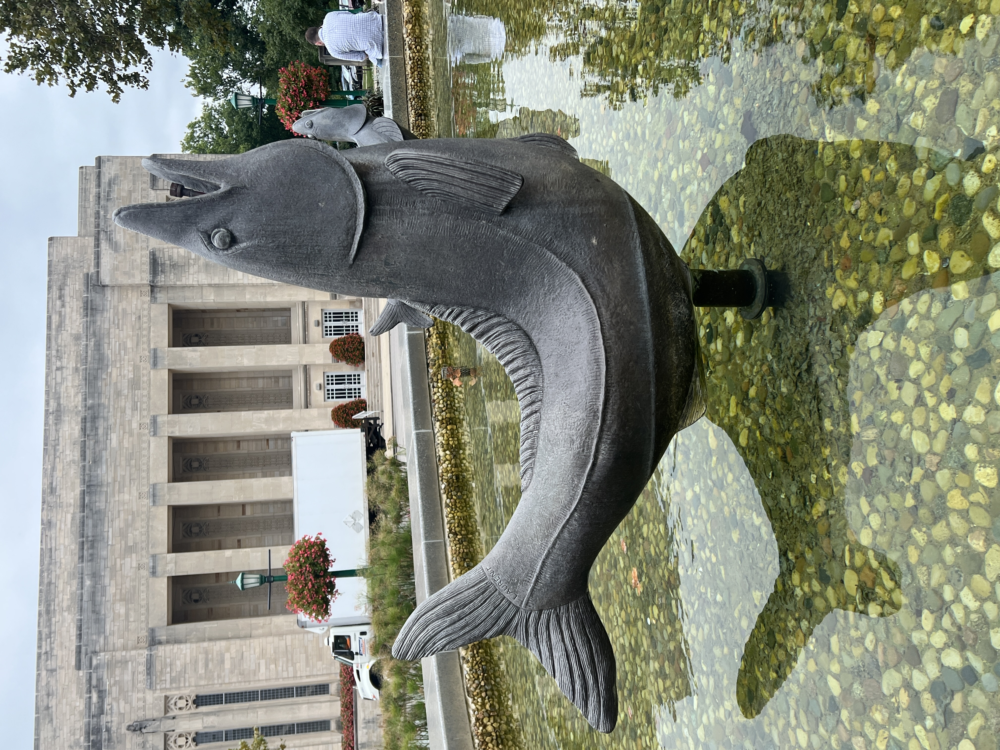

<html class ="projectone"></html>

<link rel="stylesheet" href="website.css">
<h1><b>Augmented Reality Project</b></h1>
<p><b>About the Project:</b> This augmented reality piece is meant to be shown at the Shoewalter fountain, with one of the large fish statues acting as the image target. The piece is a large fish that is covered in images of important events that have happened at the fountain throughout IU's history. There are pictures of the Vietnam War protest that happened there during the 60s, students celebrating after winning the basketball game in the 80s, and the climate change protest that happened there just last year. I decided to make the piece a little more dynamic by making the water around it move. This was my first time working with augmented reality and I really learned a lot while making this piece.  </p>

<div class="fishimage">

</div>

<div class="fish2">
<p><b>Image Target:</b>
    
</div>

<div class="fishvid">
    <p><b>Demonstration:</b>
    <video width="600" height="340"  controls>
        <source src="proj1vid.mp4" type="video/mp4">
        <source src="movie.ogg" type="video/ogg">
      Your browser does not support the video tag.
      </video>
    </div>

    <div class="fish3">
        <p><b>Source Images/Background:</b>
            
        </div>